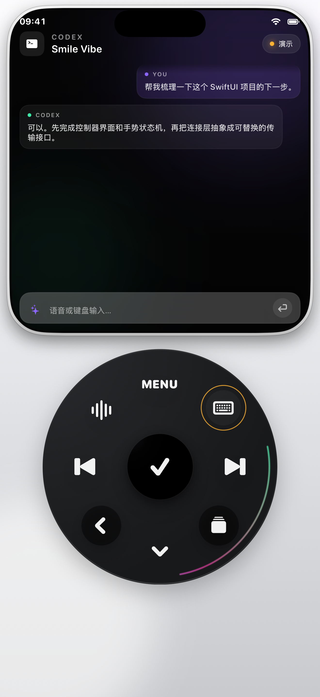
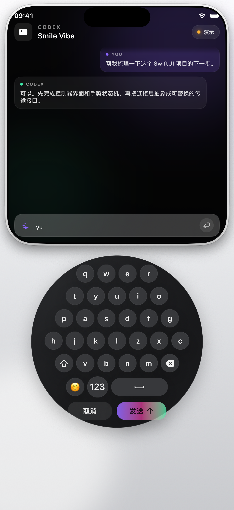

会话随身查看
获取 Mac 端受支持 AI 工具的会话列表，在手机上快速切换并查看最新内容。
在手机上查看会话、输入语音或文字，并通过可自定义的控制轮操控 Mac 上的 AI 编程工作流。
语音或键盘输入…
获取 Mac 端受支持 AI 工具的会话列表，在手机上快速切换并查看最新内容。
按住说话，实时查看转写结果；松手后保留在输入框，确认无误再发送。
通过圆盘或小键盘浏览会话、筛选 Agent，并确认常用操作，搭配触感与按键音反馈。
通过个人词汇和 Vibe Coding 词汇包，提高技术名词与常用表达的识别体验。
Smile Code 通过扫码建立设备信任，在局域网中加密传输会话、控制指令与预览画面。Mac 需要保持唤醒并运行配套端；当前不提供跨网络中转，后台或锁屏时可能无法收到提醒。可选第三方 Agent 与语音服务的数据处理见隐私政策。
阅读完整隐私政策 →以下为开发早期的界面记录，不代表当前版本。正式版本截图将在发布前更新。

